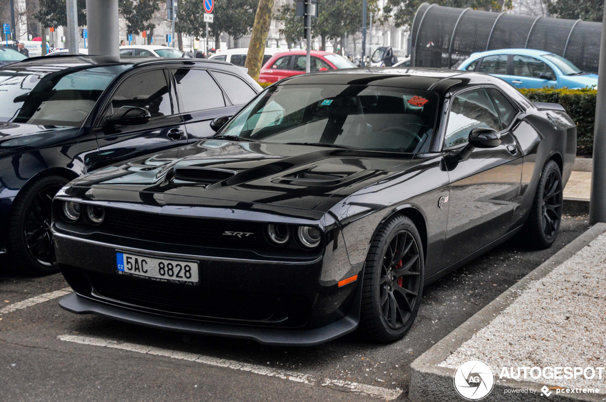

Dodge Challenger
The Dodge Challenger is the name of three different generations of automobiles (two of those being pony cars) produced by American automobile manufacturer Dodge. However, the first use of the Challenger name by Dodge was in 1959 for marketing a "value version" of the full-sized Coronet Silver Challenger.
From model years 1970 to 1974, the first generation Dodge Challenger pony car was built using the Chrysler E platform in hardtop and convertible body styles sharing major components with the Plymouth Barracuda.
The second generation, from model years 1978 to 1983, was a badge engineered Mitsubishi Galant Lambda, a coupe version of an economical compact car.
The third and current generation is a pony car that was introduced in early 2008 originally as a rival to the evolved fifth generation Ford Mustang and the fifth generation Chevrolet Camaro.
